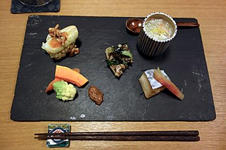
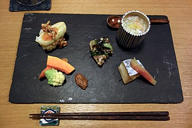
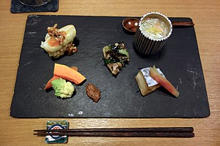
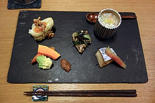

At the Sakura Japanese restaurant, We are proud to offer a wide variety of traditional and modern Japanese dishes, using only the freshest ingredients and authentic cooking techniques. Our menu features everything from sushi and sashimi to tempura and teriyaki, and we also offer a selection of vegetarian and gluten-free options.
Our cozy atmosphere and friendly staff will make you feel right at home, and we are happy to accommodate large groups or private events. We hope to see you soon for a delicious and authentic Japanese dining experience!